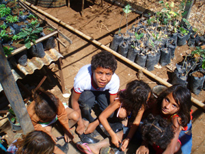
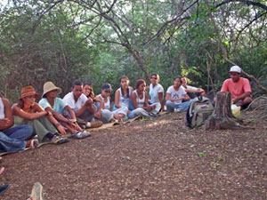
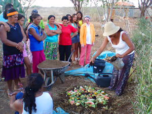

O Instituto de Permacultura em Terras Secas
Nossa missão é promover o desenvolvimento
sustentável do semi-árido através da prática e disseminação da
permacultura, do fortalecimento da cultura popular e da articulação
política.

A Lei da Otimização da Vida
O Instituto de Permacultura em
Terras Secas - IPÊTERRAS, criado e legalizado em 1997, é uma ONG
sem fins lucrativos de caráter social e ecológico, com sede e foro
na cidade de Irecê - Bahia. O Instituto desenvolve e dissemina um
trabalho agrícola apropriado ao Semi-árido baseado nos princípios da
permacultura (criação de uma propriedade sustentável baseada numa
agricultura diversificada e permanente e no aproveitamento dos
recursos renováveis como a energia solar, a captação da
água de chuva...). Por meio da educação político-ambiental e da
revitalização da cultura popular da região pesquisando, gravando,
divulgando grupos e artistas populares e organizando manifestações
culturais o IPETERRAS pretende contribuir para o desenvolvimento
sustentável da região na qual atua.


Passeios ecológicos / aulas vivas na Roça Permanente do IPETERRAS
Os 4 eixos / objetivos de trabalho do IPÊTERRAS:
(clique nos temas para mais informações)
1) Roça Permanente: Desenvolver e difundir práticas apropriadas ao semi-árido
respeitando os princípios da Permacultura buscando a sustentabilidade,
combatendo a desertificação e mantendo o espírito coletivo da Roça Permanente.
2) Educação politico-ambiental: Sensibilizar e estimular crianças, jovens e adultos
para a utilização de técnicas apropriadas ao semi-árido e a importância de preservar
o ecossistema local.
3) Cultura: Revitalizar e fortalecer a cultura popular sertaneja incentivando e
apoiando grupos e manifestações.
4) Desenvolvimento Institucional e articulação política: Buscar o fortalecimento
institucional e contribuir em processos de construção de uma sociedade mais justa e sustentável.
Um retrato da Região, do contexto: A sede do IPÊTERRAS fica situada a 05 km de
Irecê, cidade localizada na parte central do estado da Bahia, na região do
semi-árido muito marcada pela degradação ambiental e pelo êxodo rural por
conseqüência da falta de políticas de inclusão social e perspectivas profissionais.
O IPÊTERRAS foi criado para responder a essas problématicas. Ler mais sobre a região...